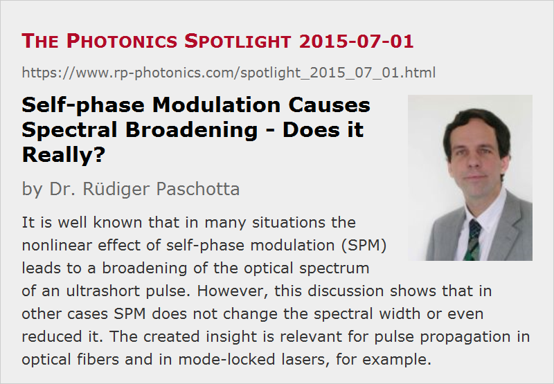

Self-phase Modulation Causes Spectral Broadening – Does it Really?
Posted on 2015-07-01 as a part of the Photonics Spotlight (available as e-mail newsletter!)
Permanent link: https://www.rp-photonics.com/spotlight_2015_07_01.html
Author: Dr. Rüdiger Paschotta, RP Photonics Consulting GmbH
Abstract: It is well known that in many situations the nonlinear effect of self-phase modulation (SPM) leads to a broadening of the optical spectrum of an ultrashort pulse. However, this discussion shows that in other cases SPM does not change the spectral width or even reduced it. The created insight is relevant for pulse propagation in optical fibers and in mode-locked lasers, for example.

For many, it seems to be common wisdom that the effect of self-phase modulation (SPM), which results from the Kerr nonlinearity, always increases the optical bandwidth of an ultrashort pulse. After all, it creates a so-called chirp, i.e., a temporal variation of the instantaneous frequency, which then runs through a wider range of frequencies. This effect is utilized, for example, in a method of temporal pulse compression, where one first broadens the bandwidth using SPM and then temporally compresses the pulse by applying an appropriate amount of chromatic dispersion which removes the created chirp.
However, it should then be irritating that various example cases quite clearly contradict the mentioned belief:
- When fundamental soliton pulses propagate through an optical fiber, these continuously experience self-phase modulation. Nevertheless, their optical bandwidth does not change at all! Well, here we also have chromatic dispersion acting on the pulse, but that linear effect is known not to affect the optical bandwidth. Therefore, how could the chromatic dispersion remove the bandwidth-broadening effect of the fiber nonlinearity?
- If one injects a higher-order soliton pulse into such a fiber, its optical bandwidth changes periodically, i.e., it regularly expands and contracts again.
- There are indeed cases where e.g. a broadband down-chirped pulse enters a fiber and leaves it with much reduced optical bandwidth and reduced chirp.
All this can be resolved by considering more carefully the generation of additional frequency components by the Kerr nonlinearity. The essential point is to realize that the Kerr nonlinearity adds certain complex amplitudes to other frequency components. (The typically used differential equations for light propagation in fibers clearly show that.) How the intensities of these frequency components change, depends on the relative signs of existing and added complex amplitudes:
- If the pulse is unchirped (i.e., it has a constant instantaneous frequency), the complex amplitudes added in the frequency domain are 90° out of phase with the already existing frequency components. As a result, the magnitude of these frequency components does not change to first order. This explains, for example, how a fundamental soliton pulse can have a constant optical bandwidth: the chirp introduced by the nonlinearity is constantly removed by the (anomalous) chromatic dispersion, and unchirped pulses are effectively not broadened by SPM.
- Without chromatic dispersion, the situation is different: the pulse can acquire a growing chirp, and here the magnitude of the generated frequency components can indeed grow, so that the bandwidth increases.
- If, however, a pulse initially has a down-chirp, the outer frequency components are indeed reduced by SPM, because the added amplitudes are out of phase with the existing ones. In that situation, SPM leads to spectral compression rather than broadening.
We see that the sign of the chirp of the pulse is essential for the nonlinear effects on the pulse spectrum, as is also illustrated in the following two diagrams:
It is also instructive to consider a soliton mode-locked laser where the pulse bandwidth is constantly reduced by the finite gain bandwidth (→ gain narrowing). In the steady state of the laser, there must be an effect to compensate for this. Apart from a modulator or a saturable absorber, SPM can take over that function. The pulse then must develop a positive chirp, as spectral broadening is possible only with that. Indeed one can observe in computer simulations that pulses in soliton mode-locked lasers exhibit a slight up-chirp, depending on the magnitude of bandwidth-reducing effects.
The presented thoughts demonstrate that one can learn a lot by thinking about basic effects e.g. in ultrafast optics or laser physics a little more closely. Many people are too quickly satisfied with inaccurate descriptions of effects, which are in contradiction even with quite common observations.
The probably most effective way for detecting and subsequently revising inaccurate beliefs is to deal with numerical models. Here, existing beliefs are continuously put to test. Seeing quite easily what exactly goes on in various systems (e.g., in a transparent laser realized in the form of a computer model), one quite quickly realizes that certain thoughts cannot be correct. At the same time, this is one of the greatest opportunities to obtain new ideas.
This article is a posting of the Photonics Spotlight, authored by Dr. Rüdiger Paschotta. You may link to this page and cite it, because its location is permanent. See also the RP Photonics Encyclopedia.
Note that you can also receive the articles in the form of a newsletter or with an RSS feed.
Questions and Comments from Users
Here you can submit questions and comments. As far as they get accepted by the author, they will appear above this paragraph together with the author’s answer. The author will decide on acceptance based on certain criteria. Essentially, the issue must be of sufficiently broad interest.
Please do not enter personal data here; we would otherwise delete it soon. (See also our privacy declaration.) If you wish to receive personal feedback or consultancy from the author, please contact him e.g. via e-mail.
By submitting the information, you give your consent to the potential publication of your inputs on our website according to our rules. (If you later retract your consent, we will delete those inputs.) As your inputs are first reviewed by the author, they may be published with some delay.
|  |
If you like this page, please share the link with your friends and colleagues, e.g. via social media:
These sharing buttons are implemented in a privacy-friendly way!